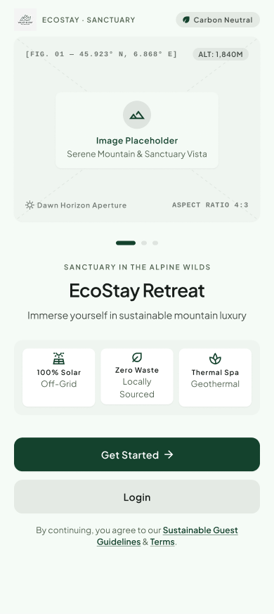
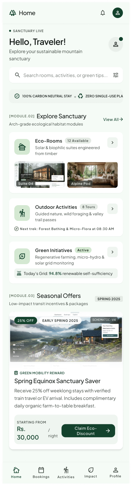
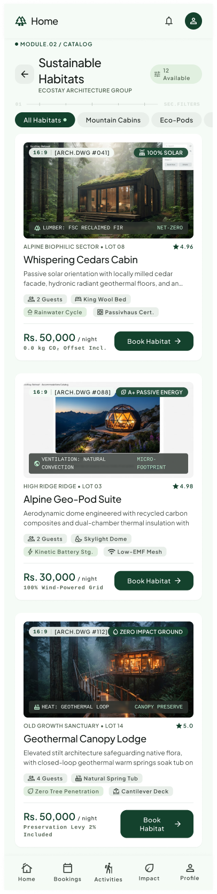
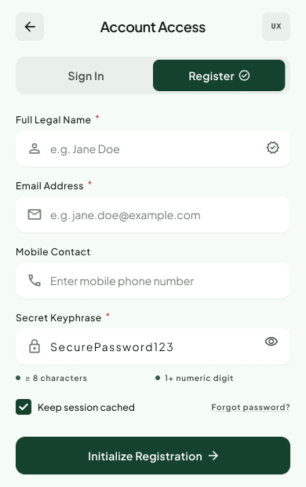
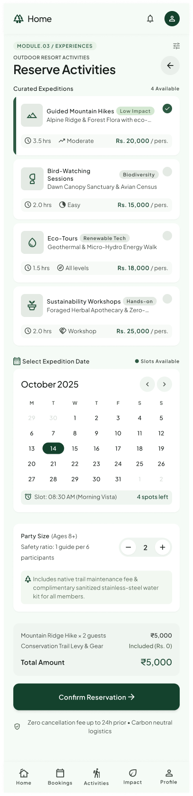
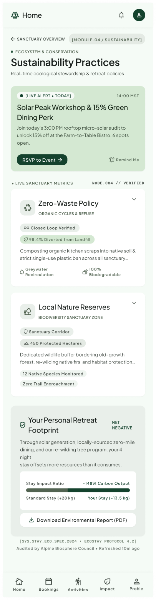

ECOSTAY RETREAT
An intuitive mobile sanctuary reservation experience combining clean alpine aesthetics, dynamic habitat browsing, outdoor expedition pass booking, and transparent sustainability tracking.



SUSTAINABLE LUXURY IN A FLUID INTERFACE
Reimagining how guests discover off-grid habitats and wilderness expeditions with a calm, friction-free mobile experience.
• THE USER PROBLEM & CHALLENGE
Traditional resort booking applications often overwhelm travelers with cluttered lists, confusing add-on forms, and zero visibility into environmental practices. Eco-conscious guests sought a tranquil digital experience that made booking unique alpine habitats and guided outdoor expeditions as effortless and inspiring as the retreat itself.
- Eliminated multi-step booking friction with glanceable card summaries.
- Replaced confusing drop-down menus with immediate tactile filter chips.
- Integrated transparent eco-metrics directly into the guest journey.
• THE UI/UX DESIGN SOLUTION
Crafted a cohesive visual system featuring high-contrast card structures, spacious touch targets, and subtle micro-feedback. The interface pairs warm alpine imagery with dark-mode elegance, ensuring readability whether navigating in bright outdoor sunlight or unwinding in a cabin at night.
CRAFTED INTERACTION PATTERNS
Every screen was designed around core user intents: effortless discovery, instant filtering, and transparent booking confirmation.
• DYNAMIC HABITAT FILTER CHIPS
Guests can switch instantly between Geo-Pods, Cedar Cabins, and Canopy Lodges with a single tap. Filter chips dynamically recalculate available unit badges in real time without refreshing the screen or interrupting browsing flow.
• OUTDOOR EXPEDITION SCHEDULER
Designed a streamlined booking modal for guided mountain trails, bird-watching, and wilderness workshops with bounded party-size controls and clear visual date selectors that prevent accidental scheduling conflicts.
• INTERACTIVE SUSTAINABILITY GUIDE
An integrated educational module featuring an interactive carbon footprint estimator, zero-waste sanctuary guidelines, and solar energy metrics that empower guests to track their positive environmental impact.
• INTUITIVE ONBOARDING & AUTH
A calm, distraction-free onboarding sequence paired with inline form validation alerts that guide first-time guests smoothly into their profile without intimidating errors or unnecessary input fields.
CORE SCREEN GALLERY
Explore the high-fidelity screens from the project. Click on any screen to open the fullscreen interactive zoom viewer.
SPLASH & ONBOARDING
Minimalist branded entry screen welcoming travelers with calm visual tones and animated entry transitions.

SIGN IN & REGISTRATION
Friction-free authentication interface with immediate visual guidance and clear feedback cues.
SANCTUARY HOME DASHBOARD
Hero mountain banner, quick action reservation tiles, featured eco-lodges, and live sustainability metrics.
HABITAT FILTERING & BROWSING
Tactile category chips filtering Alpine Geo-Pods, Cedar Cabins, and Canopy Lodges with real-time count badges.

EXPEDITION PASS BOOKING
Guided hike reservation workflow with date selection, participant bounds, and equipment prep reminders.

ECO-IMPACT & RESORT GUIDE
Engaging zero-waste tips, interactive carbon offset tracking, and localized environmental conservation guidelines.